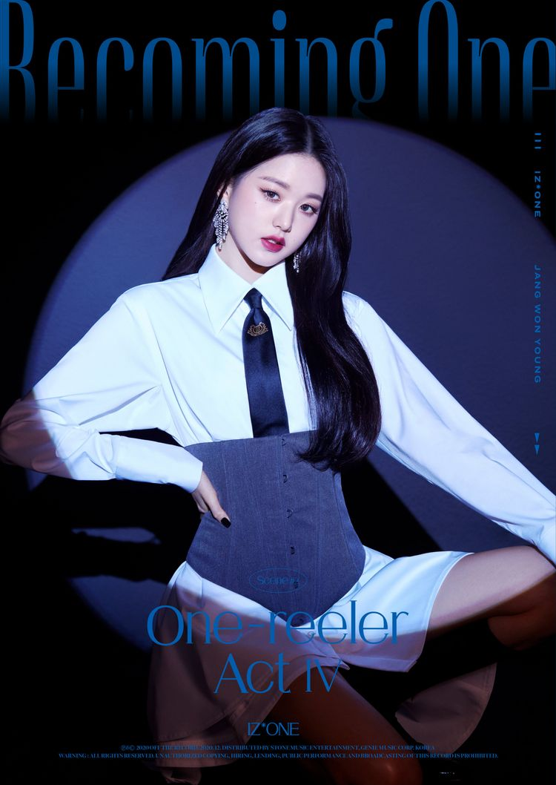

IDOL
아이린
윈터
장원영
장원영

본명
장원영 (張元英 / Jang Won-Young / チャン・ウォニョン)
출생
2004년 8월 31일[공식] (16세) 서울특별시 용산구 이촌동
국적
대한민국
신체
171cm[4], O형[공식], 245mm
가족
부모님, 언니(2001년생)
학력
서울신용산초등학교 (졸업)
용강중학교 (중퇴)
중학교 졸업 학력 검정고시 (합격)
서울공연예술고등학교 (실용음악과 / 재학)